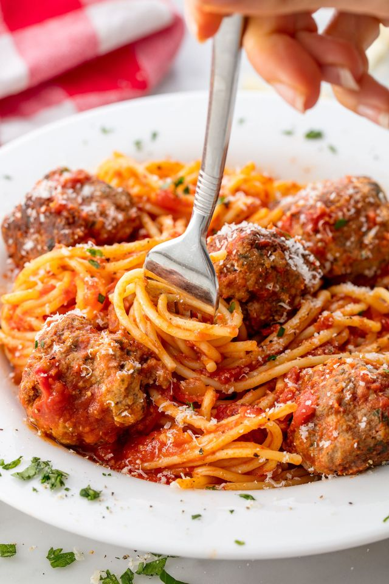

Spaghetti and meatballs!

If you're looking for a super simple, comforting, no-frills bowl of spaghetti and meatballs, you've come to the right place. And if you're feeling adventurous, it's also a great jumping off point for your own version of this classic dish!
When it comes to sauce, you've got options. For an even speedier dinner, you can totally go with jarred marinara sauce. Or, if you've got some time on your hands, we love this simple Marcella Hazan-inspired spaghetti sauce. Feel free to try your own favorite herbs and spices, tasting as you go!
The same goes for meatballs. We've got tons of recipes, from cheesy Tex-Mex Meatballs to spicy Harissa Meatballs; don't be afraid to experiment with your mix-ins, there are so many delicious meatball flavor combos just waiting for you to discover them. However you flavor them, make sure not to crowd the pan while frying. If needed, fry in batches, so that each meatball gets a chance to form a delicious golden crust.
Ingredients
- 1 lb. spaghetti
- 1 lb. ground beef
- 1/3 c. bread crumbs
- 1/4 c. finely chopped parsley
- 1/4 c. freshly grated Parmesan, plus more for serving
- 1 large egg
- 2 garlic cloves, minced
- Kosher salt
- 1/2 tsp. red pepper flakes
- 2 tbsp. extra-virgin olive oil
- 1/2 c. onion, finely chopped
- 1 (28-oz.) can crushed tomatoes
- 1 bay leaf
- Freshly ground black pepper
Once you've got all of your ingredients, its time to cook it up!
Directions
- In a large pot of salted boiling water, cook pasta until al dente. Drain.
- In a large bowl, combine beef with bread crumbs, parsley, Parmesan, egg, garlic, 1 teaspoon salt, and red pepper flakes. Mix until just combined then form into 16 balls.
- In a large pot over medium heat, heat oil. Add meatballs and cook, turning occasionally, until browned on all sides, about 10 minutes. Transfer meatballs to a plate.
- Add onion to pot and cook until soft, 5 minutes. Add crushed tomatoes and bay leaf. Season with salt and pepper and bring to a simmer. Return meatballs to pot and cover. Simmer until sauce has thickened, 8 to 10 minutes.
- Serve pasta with a healthy scoop of meatballs and sauce. Top with Parmesan before serving.